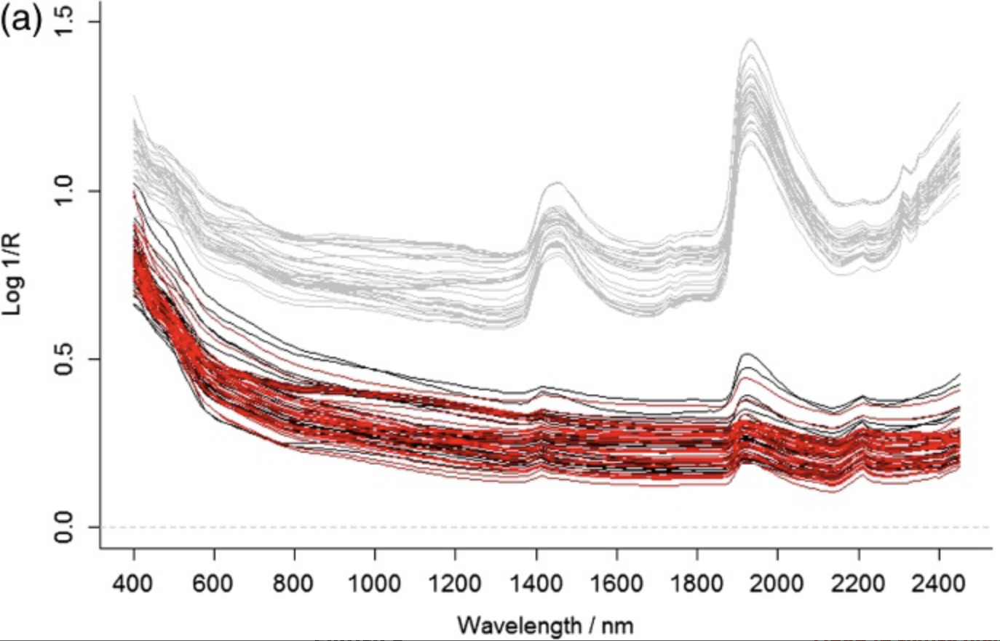
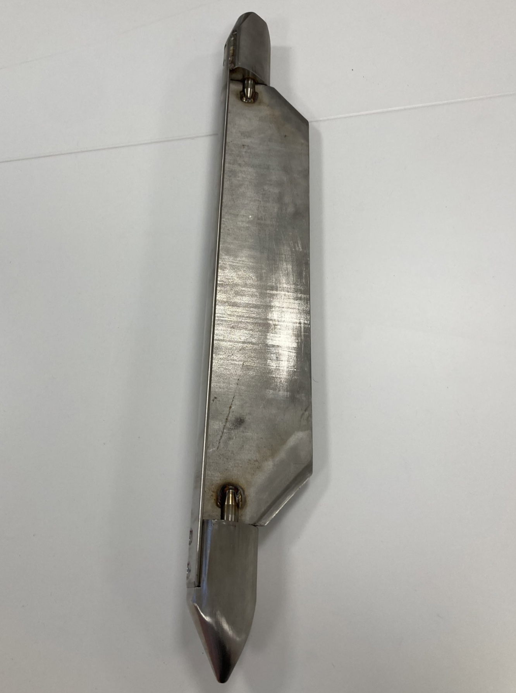
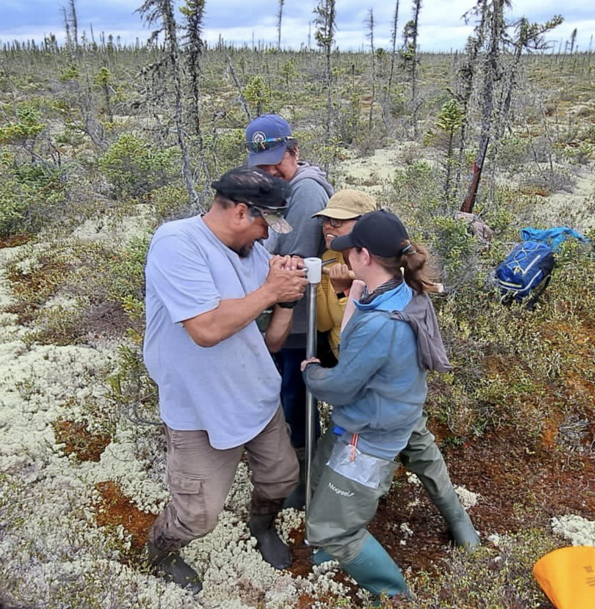
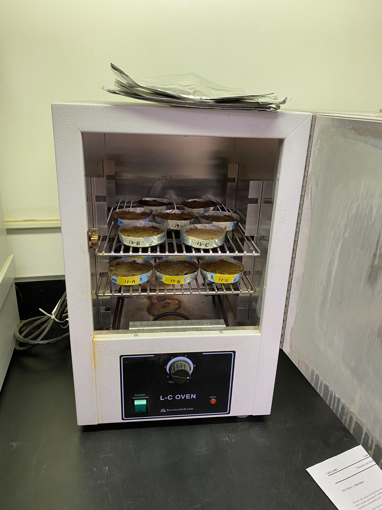
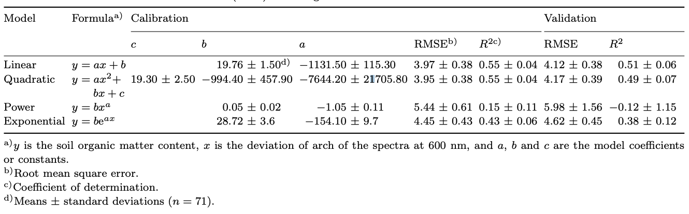
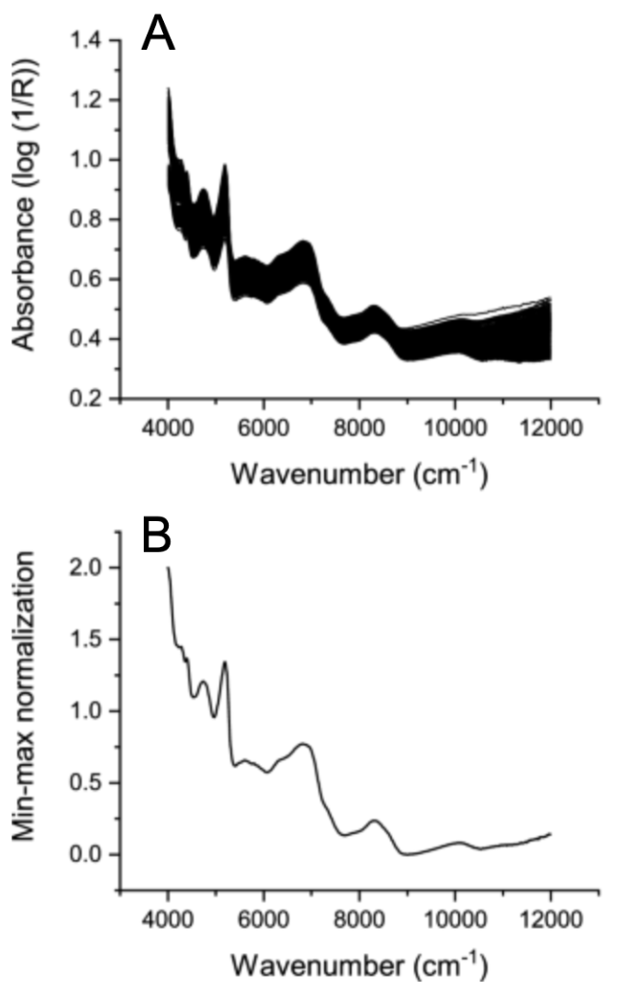

Background Information
Source:vignettes/web_only/Background_Information.Rmd
Background_Information.RmdVis-NIR spectroscopy for predicting soil organic carbon content
Over the past couple of decades, the application of visible and near infrared (NIR) regions for soil science has been researched intensively. The visible region consists of wavelengths between 400 and 780 nm and has been used to detect soil organic matter. The NIR region consists of wavelengths between 780 and 2500 nm and has been used to detect H[2]O and CO[2]. The visible region and the near infrared (NIR) region can be combined to form the visible-near infrared (vis-NIR) region. This region has been used to predict several different soil properties, but organic carbon is among the most successful for accurate predictions (Stenberg et al. 2010).
Effect of water on soil vis-NIR spectra
Water has a strong effect on the reflectance of soil in the vis-NIR region, especially between 1400 nm and 1900 nm. In this wavelength range, water causes the depth and width of absorption to become larger, thus decreasing reflectance as shown in Figure 1. This can impact the accuracy of the spectra of soil samples collected from fieldwork. Additionally, wet soil samples can have more varied particle sizes than dry samples that have been grounded, which can lead to inconsistencies in the spectra (Ji, Viscarra Rossel, and Shi 2015).

Figure 1. The absorbance spectra (Log 1/R) of 34 soil samples that were measured in the field (grey), in the lab (black), and after direct standardization (red) were used to remove environmental factors like water from the field spectra (Ji, Viscarra Rossel, and Shi 2015).
The carbcontpred package uses dried soil samples for the
example data sets to illustrate the capability of using spectra
reflectance for predicting soil organic carbon content. Dried soil
samples were chosen because the output from cpred yielded a
higher R2 value (~0.61) than the wet soil samples
(~0.52).
Measuring soil organic carbon content through dry combustion
We used a dry combustion method to measure the organic carbon content
of the soil samples in the example data sets in
carbcontpred through the University of Guelph’s Agriculture
and Food Laboratory. This is because dry combustion is considered the
standard method for chemical analysis of soil samples collected from the
field. Specifically, we used an automated carbon analyzer for detecting
carbon. This is done by introducing the dried soil samples to a
high-temperature oxidation zone which converts carbon in the soil into
CO[2]. The CO[2] gas is then carried by a carrier gas and separated from
other gases through a gas chromatographic system. Finally, the CO[2] is
detected using an automated infrared gas analyzer (Chatterjee et al. 2009).
Table 1. A list of automated analyzers, the principles for detection, and manufacturers and their contact information (Chatterjee et al. 2009).
| Manufacturer | Address.website | Model..s. | Operating.principle.detection.system |
|---|---|---|---|
| Costech Analytical Technologies | 26074 Avenue Hall, Suite 14, Valencia, California- 91355, USA www.costechanalytical.com | ECS 4010 CHNSO | The sample within tin capsule reacts with oxygen and combust at temperatures of 1700–1800°C. Combustion of sample generates mixture of N2, CO2, H2O and SO2. The gases are separated by gas chromatographic (GC) separation column and are detected sequentially by the TCD (thermal conductivity detector). The TCD generates a signal, which is proportional to the amount of element in the sample. |
| LECO Corp. | 3000 Lakeview Avenue, St. Joseph, Michigan 49085–2396, USA www.leco.com | TruSpec series | Sample encapsulated in tin foil is combusted at 950°C and detection by infrared. |
| PerkinElmer Life and Analytical Sciences | 710 Bridgeport Avenue, Shelton, Connecticut- 06484–4794, USA www.perkinelmer.com | 2400 Series II CHNS/O Elemental Analyzer | Based on the Pregl-Dumas method. Samples are combusted with user flexible mode and gases are separated by frontal chromatography and eluted gases are measured using TCD. |
| Elementar Analysensysteme GmbH | Donaustrasse 7 D-63452 Hanau, Germany www.elementar.de | vario Macro, vario Max, vario EL III | Samples are dropped into the combustion tube at user selected temperature up to 1200°C. The use of tin vessels further elevates the temperature up to 1800°C. Complete combustion is ensured with O2 jet injection. Except for N2, other gases are retarded into specific adsorption trap. After TCD signal for N2 is received, adsorption traps are thermally desorbed and the corresponding gases detected with TCD sequentially. |
| Thermo Scientific (part of Thermo Fisher Scientific Corporation) | 81 Wyman Street, Waltman, MA 02454, USA www.thermo.com | Flash EA 1112 NC | Detection by TCD. |
A limitation of this dry combustion method using an automated is that
it is incredibly expensive to use. The cost for the 432 soil samples
used for the SoilMetrics_v01.csv data set was almost
$10,000 CAD. Alternative methods for measuring organic carbon content
include in situ methods, wet combustion, and dry combustion through the
weight loss of soils through ignition (Chatterjee
et al. 2009).
Collection and processing of soil samples
We collected soil core samples using a stainless steel peat corer.
Figure 2 shows the corer used to collect the soil
samples used for the SoilMetrics_v01.csv data set and
Figure 3 shows the corer being used for sample
collection in the Hudson Bay Lowlands.

Figure 2. The stainless steel peat corer used to collect soil core samples. It has a length of ~80 cm and a width of ~10 cm wide.

Figure 3. The stainless steel peat corer being used to collect soil core samples near the Attawapiskat First Nation community in northern Ontario, Canada.
The samples were divided into 11.56 cm3 segments and weighed using a Mettler Toledo Standard ME-T Precision Balance. The reflectance of the samples was measured using an ASD FieldSpec 4 Hi-Res NG spectrometer. The soil samples were then placed in individual aluminum trays and air-dried in a Lab-Line Model 3511 L-C Oven as shown in Figure 4. The soil samples were then manually grounded using a hammer and then the mass and reflectance were measured again. Finally, the soil samples were sent to the University of Guelph’s Agriculture and Food Laboratory for carbon analysis.

Figure 4. The soil samples being air-dried in a Lab-Line Model 3511 L-C Oven.
Linear regression modeling in cpred
There are several different approaches that regression models can take to predict soil properties using reflectance. One such example is by using the “deviation of arch” (DOA) parameter of the spectra which is effective for estimating soil organic matter such as organic carbon. This parameter covers the reflectance wavelength range in the range between 550 nm and 650 nm. A DOA-based regression model can come in 4 different types: linear, quadratic, power, and exponential. The best estimation of soil organic matter amongst these 4 types is linear, yielding the highest R2 value for the validation results at 0.51 ± 0.06 for the validation results as shown in Table 2. This type of DOA-based regression model employs a linear regression model (Zheng et al. 2016).
Table 2. The calibration and validation performance for different types of deviation of arch (DOA)-based regression models (Zheng et al. 2016).

Although the wavelength range of the DOA parameter falls within the
vis-NIR region, it misses a huge portion of the region (Zheng et al. 2016). We cannot use DOA for our
prediction model in cpred because of this limitation.
However, we built cpred to create a linear regression model
due to its strong performance in Table 2.
Min-max normalization in mappred
Min-max normalization is a technique where the data values in a data set are subtracted by the minimum value and then divided by the range which is the difference between the maximum and minimum values (Sinsomboonthong et al. 2022). Min-max normalization can be demonstrated through the following equation:
\[\begin{equation} \label{eq:1}X'=\frac{X - min(X)}{max(X) - min(X)}\end{equation}\]
where X is a value in the data set, X’ is a value in the data set after min-max normalization, min(X) is the minimum value, and max(X) is the maximum value (Sinsomboonthong et al. 2022).
We built mappred to use min-max normalization on the
reflectance values from the ROI data because it is one of the common
methods for spectral preprocessing. Min-max normalization helps
eliminate the effects of solid particle size, surface scattering, and
light variation in the NIR region. This is not only limited to soil
properties as min-max normalization has been used for the spectral
preprocessing of other materials and surfaces. Figure 5
shows how min-max normalization affects the distribution of the spectra
in rice grains (Cheng et al. 2023).

Figure 5. The near-infrared (NIR) absorbance spectra of rice grains (A) without min-max normalization and (B) with min-max normalization (Cheng et al. 2023).